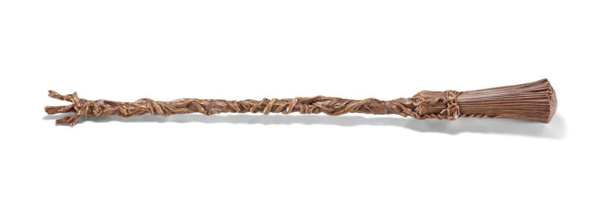

After confronting the Wizard, Elphaba and Glinda flee up to the highest tower in the Wizard's palace. When there, she performs the levitation spell in the Grimmerie which at first does not seem to work, only until an old Broomstick comes alive and flies to Elphaba. She then defies gravity by flying away from the Wizard's guards. It then becomes her mean of transportation through Oz. It is believed, however, that she does not need it to fly.